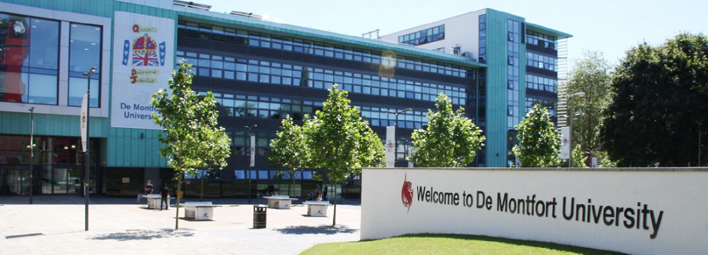

Acasă
Acasă Țări
Țări Catalog
Catalog Galerie foto
Galerie foto Experiente
Experiente Despre
DespreDe Montfort University (DMU)



Descriere
Orasul Leicester, al zecelea ca marime, este unul din cele mai sigure si ieftine orase din Anglia. Acesta este unul din putinele orase-campus din UK, unde toate facultatile si caminele sunt in acelasi loc. Aici se afla si DMU, institutie care poarta numele contelui englez din Leicester, Simon de Montfort, un nobil francez care a administrat orasul in secolul al XIII-lea si a fost personajul principal in spatele stabilirii primului Parlament al Angliei.
Mai presus de toate, universitatea, situata la mai putin de o ora de centrul Londrei, este recunoscuta drept una dintre cele mai creative institutii din Marea Britanie. Multe din programele sale sunt in top 30 în Regatul Unit iar domeniile importante precum arhitectura, sunt chiar in top 10. Universitatea se bucura de colaborari cu designeri de referinta si case de moda. De exemplu, designerul de referinta Jimmy Choo, deseori vine la scoala pentru a tine cursuri de moda.
Informații generale
Tara: Marea Britanie
Limba de predare: engleza
Ani de studiu: Foundation Certificate/International First Year- 1 an; Studii universitare – 3 ani; Studii de master – 1 an
MBA (Global)- 15 luni
Inceput an: Septembrie / Octombrie
Burse: Da
Campusuri: Leicester
Aeroporturi: Luton: 1 ora; Heathrow: aprox. 3 ore
Cazare: taxe pentru 2018/2019: Camera single cu baie si bucatarie comună: 92-99 L/sapt; Camera single cu baie proprie si bucatarie comuna: 107-162 L/sapt.
Programe de studiu:
Universitatea ofera peste 400 de programe in 5 facultati diferite (atat programe de licenta cat si de master):
Business and Law (ex: Business Management, Marketing, Law, International Relations)
Art, Design and Humanities (ex: Graphic Design, Fashion Design, Architecture, English Studies)
Engineering and Computing (ex: Computer Games Programming, Business Information Systems, Mechatronics)
Media (ex: Animation, Film Studies, Journalism)